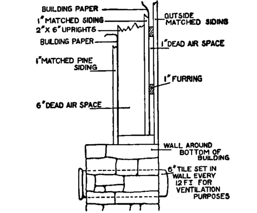
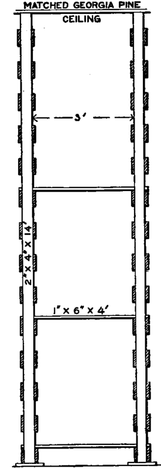

361. Storing Cabbage
Description
This section is from the book "Vegetable Gardening", by Ralph L. Watts. Also available from Amazon: Vegetable Gardening.
361. Storing Cabbage
A large percentage of the late crop is stored and sold during winter and early spring. Success in storing depends largely upon the variety. The flat or domestic cabbages, as Flat Dutch, keep only fairly well under the best conditions. We must look to the Danish Ball Head class to find the long keepers. It is nearly always desirable to dispose of the flat cabbages in the fall, although some growers succeed well in holding them for midwinter sales.
Whatever method is employed, the aim must be to keep the cabbage in a perfectly sound, fresh, crisp condition. One method may succeed admirably in preserving soundness, but may fail to keep the heads crisp and juicy, while another method may be successful in maintaining a fresh, juicy condition, but fail to prevent rot. The ideal method must succeed in both of these respects. The following conditions are essential to satisfactory storage:

Fig. 69. NEW YORK CABBAGE HOUSE.
1. The cabbage must be kept cool. Low temperatures are unfavorable to disease germs, which cause decay.
2. The air must be kept moist. A dry atmosphere causes the cabbage to wilt, to dry out and to lose its freshness and crispness.
3. Hard freezing must be prevented. Slight freezing does no harm, but a drop of 10 or 12 degrees below freezing may cause a total loss of the crop.
4. Although a certain amount of moisture is essential an excessive amount must be avoided, for it causes decay, especially if the temperature is high or the ventilation poor.
Fig. 70. NEW YORK CABBAGE HOUSE, SHOWING WALL CONSTRUCTION.
Large storage houses are used in the great cabbage-producing districts. The following description of a house near Rochester is typical of the houses used in New York and in Erie County, Pa.
This house (Figures 69, 70 and 71) was built in 1900 at a total cost of $2,000, which includes all materials, hauling, masonry and carpentry. With the price of materials 10 years later, the cost would be nearly $3,000. The dimensions of the house are 30 x 60 feet. It has 32 bins, 3x11 feet and 14 feet high, each bin holding five tons of cabbage. The driveway is 8 feet wide and is frequently rilled, giving an additional capacity of 40 tons, or 200 tons as the maximum capacity.
Fig. 71. NEW YORK CABBAGE HOUSE SHOWING BIN CONSTRUCTION.
The ceiling (which is also the floor of the loft) is of matched Georgia pine, and has eight trap doors over the bins for ventilation, which is very essential during the first few days of storage. The floor of the lowest bin is 6 inches above the ground, to allow free circulation of air under the cabbage. The floors are made by placing 2x4 cross-pieces between the cleats on the sides of the bins and then laying 12-foot boards lengthwise. These boards should be 6 inches wide and laid with an inch or more space between them to provide for air circulation. Tiles placed in the wall at the surface of the ground and at intervals of 12 feet provide ventilation under the bins. In severe weather they may be closed by stuffing with old sacks. The bins are made of 2 x 4 uprights, with 4-inch boards as siding, the boards being placed 4 inches apart, and the uprights making an air space of 4 inches between bins. When the driveway is used for storage it is necessary to construct similar bins in the passage, as this is filled from the wagons backed in from each door toward the center of the building. The loft may be used for storing barrels and crates. (See Figures 69, 70 and 71).
Some farmers store a few hundred heads of cabbage in the house cellar. If this can be kept cool, moist and properly ventilated, the results are generally satisfactory. Most cellars, however, are not favorable to storing vegetables, and cabbage is an undesirable crop to have in the cellar of the residence.
Outside cellars are satisfactory if properly constructed They may be used for other vegetables. The walls should be stone, brick or concrete and the roof should be provided with air chambers, to make it frost proof. The cellar may be of any desired dimensions, 14 x 18 feet being the most common, and dug to any convenient depth and the walls built up even or slightly above the ground level. Rafters and boards may be used in the roof construction, or boards alone if provision is made for a ridge pole and purlins and supports between ridge pole and side walls. The roof should be covered with soil, sods, manure or other material, to furnish additional protection from cold. Small cupolas or ventilating shafts should be built through the center of the pit at intervals of about 15 feet. The gable ends should contain windows for light and ventilation.
Pits of both permanent and temporary character are in common use. They vary in width from 8 to 18 feet. The wider pits are more economical in construction for the amount of storage space provided, and are more convenient in use. These pits are dug about 2 feet deep, and the sides made of brick, stone, concrete or wood. A well-drained location should be selected for the pits near the farm buildings, where it will be convenient to care for them and to prepare the crop for market. The roof construction may be of boards or concrete, and provision must be made for ventilation, as explained in the previous paragraph. Strawy horse manure is excellent to cover the roof. Inexpensive pits should be in more general use among growers who do not produce enough winter cabbage to justify the erection of storage houses.
Various methods of burying or partial burying are in use. Where the winters are mild, little protection is necessary. Near Washington, D. C., the plants are pulled and stood upright in long, shallow trenches 5 or 6 feet wide; a furrow is thrown up on both sides and marsh hay spread over the tops of the heads, the amount of hay being increased when the weather becomes severe. With this plan the heads become solid and may be easily removed at any time during the winter. Farther north the plan is modified by making narrow trenches and providing better protection by using more soil, hay or manure. A favorite plan in southern Maryland is to turn the heads where they grow toward the north, and to cover the stems and the lower part of the heads with earth. If preferred, the heads may be gathered together and protected in this way.
On Long Island a very common method is to draw a furrow 6 to 8 inches deep, pull and place the plants in the trench with heads down. A furrow thrown from each side completes the work of burying. This makes a covering of about 1 foot of soil, which is ample for that locality.
The following plan of burying cabbage has been successful and may be used in all parts of the North: The crop is cut with sharp hatchets, stubs 4 or 5 inches long being left for convenience in handling. If preferred, the crop may be gathered and hauled to a convenient, well-drained field near the barn or other building to be used in preparing the crop for market. The heads are placed on top of the ground, in long rows, three heads in width, side by side, the rows running up and down the slope of the land, to provide drainage. The usual custom is to invert the heads, but better protection is afforded by placing them on their sides, with the outer leaves beneath. A layer of cabbage one or two heads in width may be placed on top, but this increases the labor of burying. The windrows should be far enough apart to drive between them with a wagon.
After the crop has been placed in this manner a two-horse plow is used in drawing two furrows on each side of the windrows, as much soil as possible being thrown over the cabbage. The burying is finished with shovels, when care is taken to get 5 to 6 inches of soil over the cabbage. If buried about the middle of November, the soil will afford sufficient protection for at least a month, when 3 or 4 inches of manure should be thrown over the ridges. Additional manure may be used in the coldest localities. If more convenient, the manure may be applied immediately after burying, but there is no necessity for making such an early application. If the cabbage is sound, there should be no loss from this method. If handled on a large scale, the actual cost of burying, aside from the use of manure, which should not be reckoned, will not exceed 60 cents a thousand heads.
The most serious objection to burying is the unpleasantness of taking out the cabbage in very cold weather. Large quantities, however, may be removed on the mildest days and stored in the barn or the cellar to meet the daily demand.
Continue to:
Tags
plants, crops, gardening, cultivated, harvesting, food ,greenhouses, fertiliser, vegitables